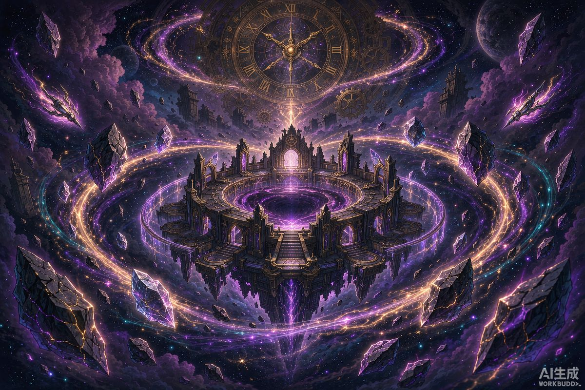

核心结论：本期混沌回忆难度中等偏上，核心是新 BOSS「火花大会」和深度绑定欢愉体系的深渊环境。满星密码：用欢愉队 / 记忆队 / 超击破队任一成型体系，把一名辅助换成爻光高频触发笑点 Buff，中低练度（主C 0+0、遗器主词条正确）即可满星。
一、本期环境解析
- 新 BOSS 火花大会：上半核心压力点，机制与欢愉体系深度绑定，用欢愉命途角色攻坚体验大幅提升
- 深渊增益：核心 Buff 与「笑点」机制挂钩——欢愉体系角色可以轻松叠满增益层数
- 逃课思路：常规阵容里把一名辅助换成爻光，高频触发增益拉高全队输出上限
- 难度趋势：本期"水温"较上期明显上涨，卡在 11-12 层的玩家优先检查配队属性分布，而不是盲目堆练度
二、12层满星阵容推荐
阵容一：火花/红A 欢愉队（本期最大版本答案）
火花（或红A）+ 砂金·戏浪 + 爻光 + 藿藿
- 欢愉机制 + 笑点 Buff 双吃，应对火花大会就是降维打击
- 没有砂金·戏浪可用不死途或银狼LV.999替代输出位
阵容二：遐蝶记忆队
遐蝶 + 长夜月 + 知更鸟·晴歌 + 风堇
- 4.5 上半新角色知更鸟·晴歌入队后记忆队强度再上一档
- 官方推荐配队，多动高频触发深渊增益
阵容三：流萤超击破队
流萤 + 开拓者（同谐）+ 阮梅 + 灵砂/加拉赫
- 大丽花辅助的变体超击破体系本期同样具备统治力
- 老牌体系，0+0 流萤即可上场，性价比首选
阵容四：DOT队
卡芙卡 + 黑天鹅 + 阮梅 + 藿藿
- 经黑天鹅补强后的 DOT 队本期表现稳定，适合下半路清杂
三、练度要求（中低配也能满星）
| 项目 | 要求 |
|---|---|
| 五星角色配置 | 0+0 或 0+1 即可 |
| 四星角色 | 4-6 星魂 |
| 遗器 | 主词条正确 + 有效副词条若干 |
| 光锥 | 专武非必需，叠影四星光锥即可 |
四、满星通用技巧
- 弱点分配第一：先看上下半怪物弱点分布，把对应击破属性的主C分到各路，别把同属性双C塞同一路
- 第一波别交大招：小怪用战技/普攻清，能量留给第二波精英和 BOSS
- 卡 BOSS 前摇：火花大会的技能有抬手前摇，提前开盾/奶抬血线
- 控制行动条：满星核心是回合数，生存位堆速度、辅助堆回能，保证关键技能循环
- 凹不过就升级：遗器副词条凹不出就刷行迹和光锥等级，稳定提升比运气可靠
上半卡在火花大会？不用硬凹——等抽到火花（或复刻入队）再回来，难度会断崖式下降。深渊不会跑，星琼会。